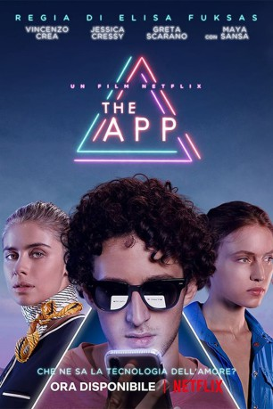

IMDB-Wertung: 2.6 / 10
IMDB-Wertung: 2.6 / 10  Metascore:
Metascore: 
Niccolò Melzi d’Eril entstammt einer der prominentesten italienischen Familien und hat alles: Er ist intelligent, schön, reich, privilegiert … und überaus einsam.
 IMDB-Wertung: 2.6 / 10 Metascore:
Niccolò Melzi d’Eril entstammt einer der prominentesten italienischen Familien und hat alles: Er ist intelligent, schön, reich, privilegiert … und überaus einsam.
Jahr: 2019
Dauer: 79 Minuten
FSK:
Land: Italien Studio: NetflixTonspuren: - , - ,
Untertitel: Deutsch,
Auflösung: 1080p (1920x1040) Größe: 2816 MB
Genre: Thriller, Drama, Sci-Fi
Regisseur: Elisa Fuksas
Drehbuch: Elisa Fuksas, Lucio Pellegrini
Soundtrack: Michele Braga
Darsteller:
Datei: X:\2019(A-F)\App, The (2019, FSK, 1920x1040).mkv seit 12.01.2020
Festplatte: HD 2018(G-Z)-2019(A-Z)
 Es gibt insgesamt 60 Filme in der Gruppe '2019(A-F)'
Es gibt insgesamt 60 Filme in der Gruppe '2019(A-F)'